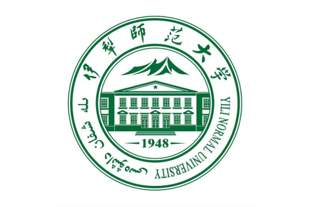
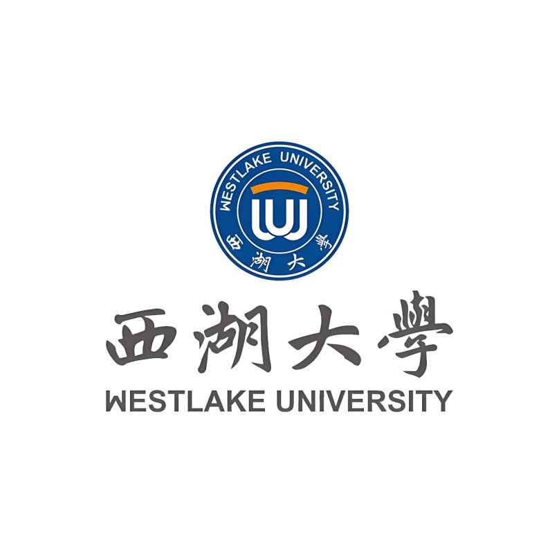

Recent advances in Large Language Models (LLMs) have created new opportunities
for robot learning and planning. LLMs provide powerful semantic reasoning,
task decomposition, instruction understanding, and commonsense knowledge, while
human feedback and demonstrations can improve alignment, safety, and adaptability
in real-world robotic systems.
This workshop focuses on the integration of LLMs, human guidance, and robotic
learning/planning methods. We aim to bring together researchers working on
embodied AI, human-in-the-loop learning, interactive robot planning, and
human-robot collaboration to discuss how robots can learn, reason, and act with
both model-based intelligence and human support.
Sponsorship


Invited Talk
Robot Planning with Foundation Models: From Service to Assistive Tasks
Dr. Shiqi Zhang
Associate Professor, School of Computing, SUNY Binghamton
Abstract
Robots rely on task planning to sequence high-level actions and on motion planning
to generate continuous trajectories that realize those actions. Task and motion
planning (TAMP) integrates these two levels of reasoning to ensure both goal
completion and motion feasibility. However, deploying TAMP in the real world
remains challenging: environments are open, dynamic, and full of unforeseen objects
and situations. In this talk, I will present our recent work on leveraging
foundation models to advance human-robot TAMP systems. I will highlight
applications ranging from service robots that set tables and deliver objects, to
quadruped robots that assist people with visual impairments in navigation.
Bio
Dr. Shiqi Zhang is an Associate Professor with the School of Computing, the State
University of New York at Binghamton (SUNY Binghamton), where he is the founder and
director of the Autonomous Intelligent Robotics Group. His research interests include
robot decision making, robot learning and human-robot systems. He was a Postdoc under
Peter Stone at the University of Texas at Austin, and received his Ph.D. under Mohan
Sridharan in Computer Science from Texas Tech University. He was the PI of a National
Science Foundation (NSF) National Robotics Initiative project on robot decision making
and is the PI of another NSF project on assistive robotics. He received the Best
Robotics Paper Award from the 2018 AAMAS conference, a Ford URP Award in 2019, an
OPPO Faculty Research Award in 2020, and an Outstanding Associate Editor recognition
in 2024 from the IEEE Robotics and Automation Letters journal.
Invited Talk
Augmented Reinforcement Learning-based Safe and Trustworthy Control
Dachuan Li
Southern University of Science and Technology
Abstract
The Reinforcement Learning (RL) has emerged in recent years as a novel and
promising paradigm for the control of robotic systems. The robustness and safety
issue in complex real-world environments pose significant challenge to the
development of RL-based robotic systems. The provable safety assurance of RL-based
controller is missing, and how to utilize the intervention experience to
effectively augment the RL controller is an unaddressed issue. In addition, the
combination of model- and learning-based control techniques pose new challenges to
the design of robotic control systems. This talk presents the design of safe and
trustworthy control systems based on augmented RL techniques, with topics including,
reinforcement learning-enabled control with runtime safety assurance, intervention
experience-guided adaptable RL control, MPC-augmented RL control, as well as case
studies in actual autonomous vehicles.
Important Dates
Submission DeadlineMay 10, 2026
NotificationJune 18, 2026
Registration DeadlineJuly 2, 2026
Workshop DateJuly 10-12, 2026
Topics
LLM-based robot learning and planning
Human-in-the-loop robot policy learning
Human feedback and preference-based robot learning
Interactive imitation learning and reinforcement learning
Grounding LLMs in physical robotic environments
Task planning, motion planning, and embodied reasoning
Safety, trustworthiness, and alignment in robotic systems
Human-robot collaboration and shared autonomy
Venue
ICRL 2026 will be held in Yili, China. Conference accommodation is listed as
Jiahui Hotel, Chongqing North Road, Yining City, Yili Kazak Autonomous
Prefecture, Xinjiang, China.
Register
The ICRL registration deadline is July 2, 2026. General author registration is
$500 per paper, student author registration is $470 per paper, and presenter
registration without a submission is $200 per person.